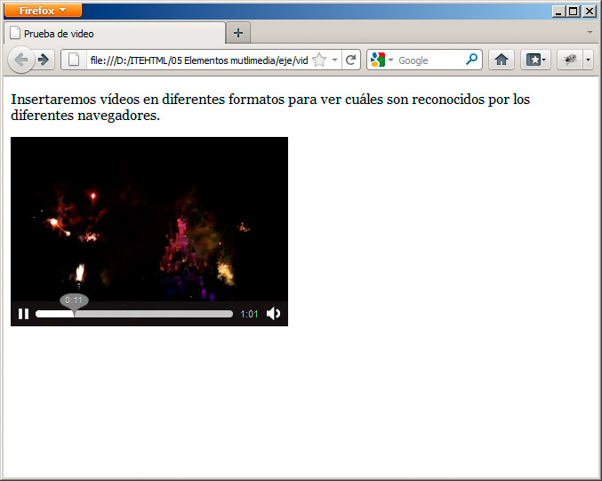
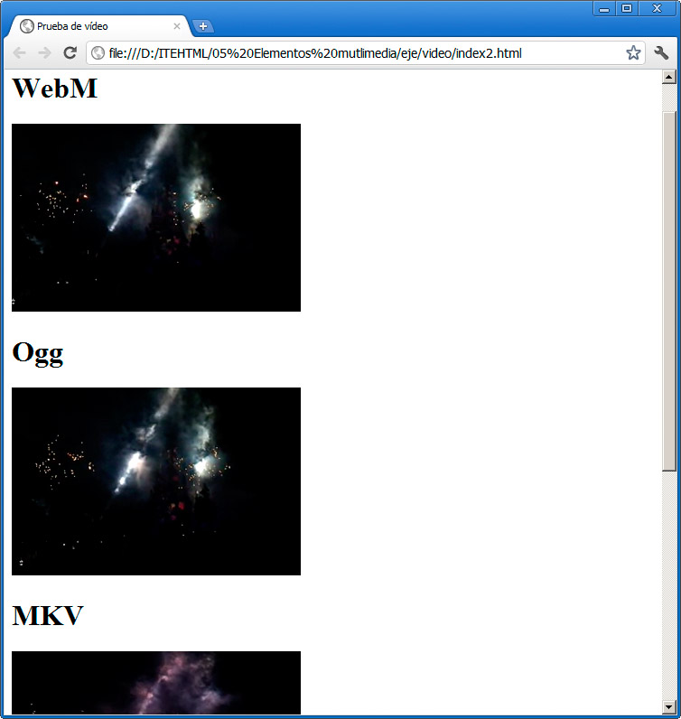

<video src="video/fireworks_reducido.webm"></video>
La ruta del vídeo debe ser la que corresponda (en nuestro ejemplo, está colocado dentro de una carpeta llamada video). Al probar la película en el navegador, obtendremos un resultado similar al de la figura:

Nota
Si no se muestran los controles o el vídeo no se reproduce, haga clic con el botón derecho sobre él para mostrar un menú con las opciones necesarias para corregirlo.
Así podemos probar diferentes formatos para ver cuál es el que se reproduce en nuestros navegadores habituales. Esa misma página no se reproducirá correctamente en Internet Explorer, pero sí lo hará en Google Chrome. De hecho, Google Chrome sería capaz de reproducir cuatro de los formatos que hemos generado, como se muestra en la figura:

La etiqueta video ofrece una solución alternativa, para evitar estos inconvenientes de formatos, que consiste en ofrecer el vídeo en varios formatos, para que sea el propio navegador el que muestre el más adecuado.
La etiqueta se escribiría de la siguiente manera:
<video>
<source src="video/fireworks_reducido.mp4" type="video/mp4" />
<source src="video/fireworks_reducido.ogg" type="video/ogg" />
<source src="video/fireworks_reducido.webm" type="video/webm" />
</video>
Este ejemplo concreto se reproduciría perfectamente en la mayor parte de los navegadores actuales.
Dimensiones del vídeo
Como sucedía con las imágenes, en un vídeo podemos indicar su anchura y altura mediante los valores width y height. De hecho es recomendable hacerlo, para que el navegador sepa de antemano el espacio que debe destinar al vídeo. Por tanto, este ejemplo es más adecuado que el anterior:
<video src="video/fireworks_reducido.webm" width="300" height="208"></video>
Los valores que emplearemos serán los que utilizamos al crear el vídeo.
Más parámetros
Hay otros parámetros que resultan útiles para la reproducción del vídeo:
- controls: si queremos que se muestren los controles que permiten pararlo, reproducirlo, etc. Basta con insertar ese término, sin más valores.
- autoplay: al indicar este valor, el vídeo se reproducirá en cuanto esté listo.
- preload: hace que el vídeo se empiece a cargar en cuanto se accede a la página. Por el contrario, indicando preload="none", no se cargará hasta que el usuario haga clic en el vídeo para su reproducción. Esta segunda opción es muy útil, si el vídeo no es el recurso fundamental de la página y vamos a tener personas que no estén interesadas en verlo, ya que nos ahorrará mucho ancho de banda.
- loop: indicándolo conseguiremos que el vídeo se reproduzca cíclicamente. Si no indicamos nada, al terminar su reproducción se detendrá.
- muted: el vídeo no tendrá sonido al comenzar.
Nota
Como se puede observar, la mayoría de estos parámetros no requieren indicar su estado. Son valores booleanos, que están activos o inactivos. Si se indica el parámetro, está activo y si no, no lo están.
Con todo esto podríamos definir lo que harían estos ejemplos:
<video src="video/fireworks_reducido.webm" width="300" height="208" autoplay controls></video>
Se carga el vídeo y se reproduce inmediatamente, mostrando los controles.
<video src="video/fireworks_reducido.webm" width="300" height="208" preload controls></video>
Se muestran los controles, el vídeo se precarga, pero no se reproduce hasta que el usuario pulsa el botón de reproducción.
<video src="video/fireworks_reducido.webm" width="300" height="208" preload="none" controls></video>
Igual que el anterior, pero no se precarga hasta que el usuario hace clic.
Insertar vídeo con un editor web
Para insertar un vídeo con BlueGriffon, seleccionaremos la opción Insertar>Elemento HTML 5>Video. Aparecerá el cuadro de diálogo de la figura, donde podremos especificar el archivo que vamos a insertar y algunos valores adicionales:

Se pueden cambiar los valores habituales e incluso establecer el fotograma, que se utilizará como imagen fija, cuando el vídeo no se haya reproducido aún.
Según la versión, es probable que el vídeo no se muestre, aunque esté ahí. Para visualizarlo debemos reproducir la página en nuestro navegador.
Pregunta de Elección Múltiple
|
<video src=/>"nobredelarchivo.extension">.
| |
|
<video src="nombredelarchivo.extension"></video>
| |
|
<video ="nombredelarchivo.extension"></video>
|
Pregunta Verdadero-Falso
<video>
<source src="nombre.mp4" type="video/mp4" />
<source src="nombre.ogg" type="video/ogg" />
<source src="nombre.webm" type="video/webm" />
</video>
Verdadero Falso